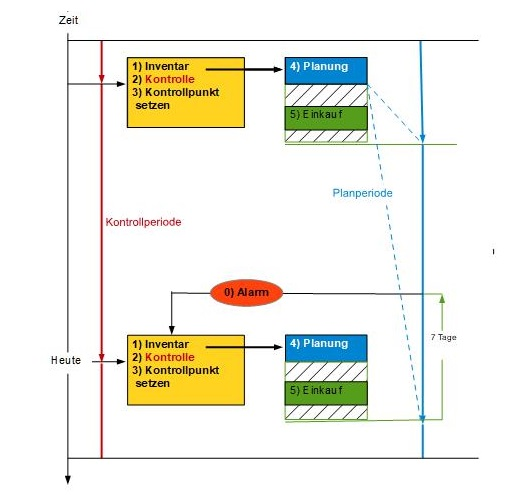
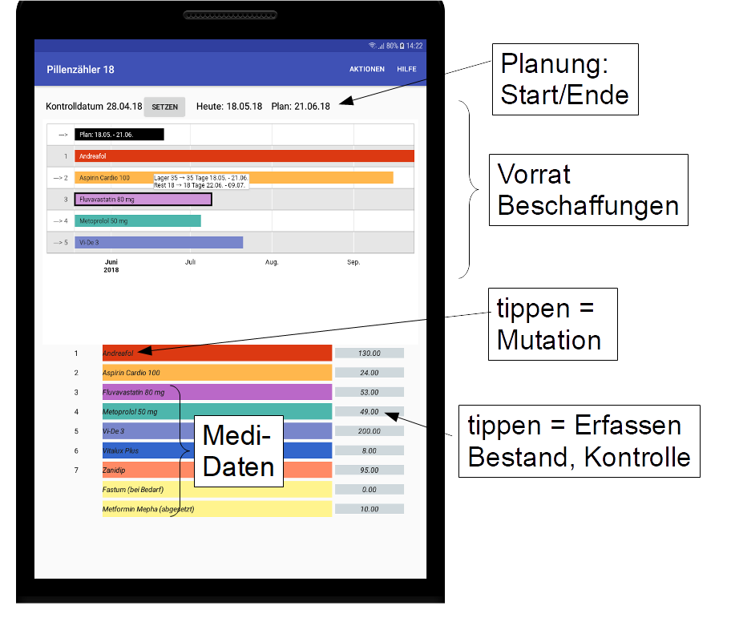
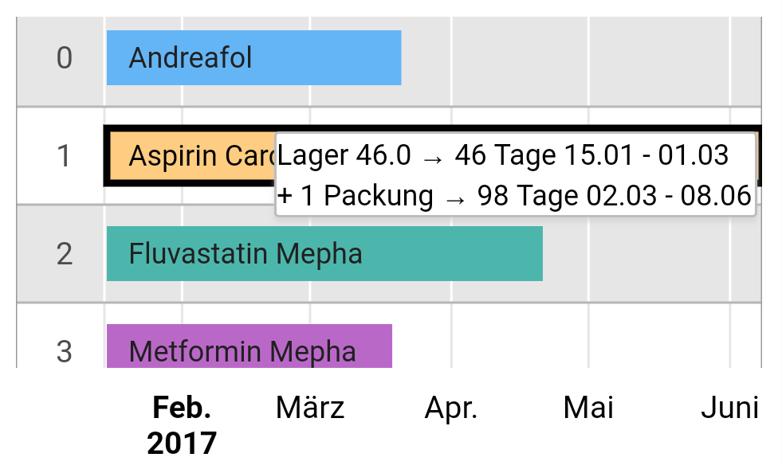
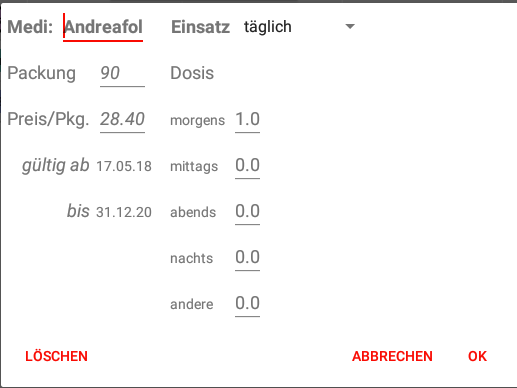

Welche und wie viel von meinen Medikamenten müssen beschafft werden?
Wurden die Medikamente regelmässig nach Rezept eingenommen?
0) 1 Woche vor Ablauf der Planungsperiode erhält der Benutzer eine Benachrichtigung, eine Aufforderung, seine Medikamente zu verwalten.
1) Die Erfassung des Tagesinventars ist Grundlage für Kontrolle und Planung.

2) Die Kontrolle wird so berechnet:
Bestand Start
+ Einkauf
= Summe
- Sollverbrauch
= Sollbestand
- Bestand Ende
= Differenz
Unterschiedliche Tageszeiten der Inventare des Kontrollpunk/Heute können Differenzen von 1 Tagesdosen verursachen.
Auslösung der Kontrolle: durch den Knopf rechts vom Medi-Namen für ein einzelnes Medikament oder durch das Menu für eine Liste aller Medikamente.
3) Kontrollpunkt setzen: die heutigen Istbestände werden mit dem Tagesdatum abgespeichert.
4) Planen: die notwendigen Einkäufe werden berechnet abhängig von
5) Einkauf: er muss verbucht werden, damit ein Sollbestand der Zukunft berechnet werden kann.
Die Zeit für Wiederbeschaffungen muss eingerechnet werden. Wenn die Apotheke alle 4 Wochen aufgesucht werden soll, wird ein Bedarf von 5 Wochen geplant.

Jedes aktivierte Medikament erhält eine besondere Farbe - die gleiche im Zeitplan-Diagramm wie in der Medikamentenliste, damit man sofort sieht, was zusammen gehört. Gelb: die App bewirtschaftet das Medikament nicht, weil es noch nicht einzunehmen oder abgesetzt ist; nur nach Bedarf eingenommen wird; und wenn die Einnahme nicht täglich ist.
Das ist ein Zeitplan-Diagramm. Es zeigt, wie lange die Lagervorräte inkl. notwendigen Beschaffungen reichen. Das Antippen eines Balkens zeigt Planungsdetails.

Tippen auf den Medi-Namen zeigt den Mutations-Bildschirm. Die Packungsgrösse muss grösser 0 sein.
Das Datum "gültig ab" muss erfasst werden, damit ein Medikament in die Verwaltung der App kommt. Die Packungsgrösse muss grösser 0 sein.

Mit "Teilen" können die Listen einer anderen App übergeben werden. Zum Drucken, E-Mail, Aufbewahren.
Der Benutzer ist verantwortlich für korrekte Daten. Für Folgeschäden aus der Verwendung der App wird jede Haftung abgelehnt.
Die App setzt Google-Zeitplan-Diagramme ein. Das setzt eine Internetverbindung voraus. Diagrammdaten werden über das Netz gesendet, jedoch nicht in der Cloud gespeichert.